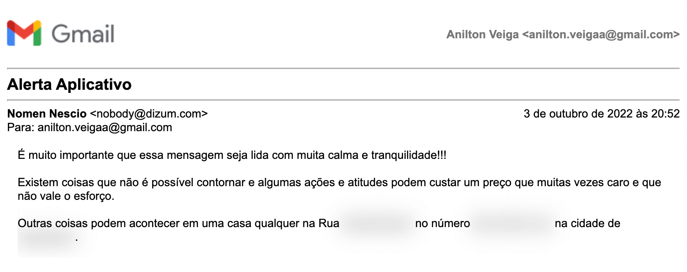

O BrasiliApp acabou!
Com o objetivo simples e honesto de trazer transparência para a população mostrando como os deputados federais gastavam o dinheiro público de forma fácil e rápida.
De forma geral o BrasiliApp exibia as despesas dos deputados federais, tal como as empresas onde o dinheiro era gasto e seus comprovantes fiscais mostrando muitas vezes divergências ou gastos excessivos.
Após o aplicativo atingir a marca de 220.000 downloads por motivos de segurança física e mental ele já não recebe atualizações na AppStore e na PlayStore.
Obrigado aos mais de 220K de pessoas que baixaram o BrasiliApp
Quando construí o BrasiliApp em meados de 2018, jamais imaginei que um aplicativo simples e feito apenas por uma pessoa poderia atingir tanta gente. Como engenheiro de software por formação essa foi uma das minhas maiores realizações pessoais, para vocês terem uma ideia a cidade em que vivo possuí apenas 27.000 habitantes, ou seja, mais de 8x a população da minha cidade baixou o BrasiliApp e tudo isso foi graças a vocês, meu muito obrigado novamente!
Projeto open-source
No mês de agosto de 2022, após a quantidade imensa de pessoas da área de tecnologia que entraram em contato comigo querendo contribuir com o projeto, eu resolvi criar uma documentação, construí um roadmap e próximos passos principalmente para trazer dados dos deputados estaduais e despesas de algumas prefeituras que foram sugestões dos usuários, mas decidi não seguir em frente por um fato extremamente descorfortável e perigoso que aconteceu e vocês vão entender mais abaixo.
O que aconteceu?
De forma resumida para quem não estiver a fim de ler tudo o que aconteceu? Eu fui ameaçado após a repercussão que o aplicativo teve em 2022.
18/08/2022
No dia 18/08/2022 após realizar algumas melhorias fiz uma publicação no linkedin falando como softwares em geral facilitam a vida das pessoas (Link da publicação).
Essa publicação alcançou até a data de hoje 19/03/2023:
724.529 impressões
13.594 reações
1.413 compartilhamentos
756 comentários
Essa screenshot é do próprio LinkedIn
19/08/2022
No dia 19/08/2022 o Ricardo Amorim (muito obrigado Ricardo) como um grande influenciador publicou em suas redes sociais sobre o aplicativo com o objetivo de que mais pessoas pudessem acessar e analisar as informações, na época Ricardo tinha mais de 2mi de seguidores apenas no LinkedIn, fico imaginando quantas outras pessoas também tomaram conhecimento do BrasiliApp nessa data. (Link da publicação).
23/08/2022
No dia 23/08/2022 o portal de notícias Banda B, também realizou uma publicação em seu portal e também nas redes sociais. (Link da publicação).
23/09/2022
No dia 23/09/2022 a Rádio CBN fez uma publicação sobre aplicativos que ajudariam os eleitores na hora da votação e mencionou o BrasiliApp (Link da publicação).
Eis que, no dia 03/10/2022 às 20:52 recebo o e-mail abaixo
Após ver esse e-mail que no seu conteúdo tinha exatamente o meu endereço residencial, parei tudo o que estava fazendo em relação ao BrasiliApp, desisti de liberar o aplicativo para a comunidade de forma open-source e em temor pela minha segurança e da minha família, algo que foi foi falado para mim algumas vezes enquanto desenvolvia esse projeto, o BrasiliApp não vai receber mais atualizações.
Conclusão
Na minha opinião realmente os dados exibidos pelo BrasiliApp eram sensíveis mas ao mesmo tempo públicos e de grande valor para a população. Espero que o Governo ou entidades que prezem pela transparência construam algo similar para o seu povo e que o medo de retalhação seja vencido em um país livre como o Brasil.